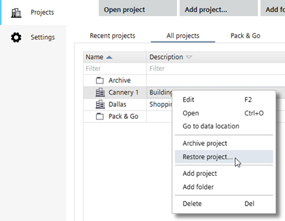

恢复项目
存档的项目可以在任何 ABT 站点安装中恢复。每个项目都受密码保护。您可以在没有密码的情况下恢复和覆盖项目，但您仍然需要项目的密码才能打开项目。在覆盖项目之前，请确保您拥有正确的密码。

Restore a project
- In Project Manager > Projects > All projects, right-click a project.
- Select Restore project.
存档的项目可以在任何 ABT 站点安装中恢复。每个项目都受密码保护。您可以在没有密码的情况下恢复和覆盖项目，但您仍然需要项目的密码才能打开项目。在覆盖项目之前，请确保您拥有正确的密码。
